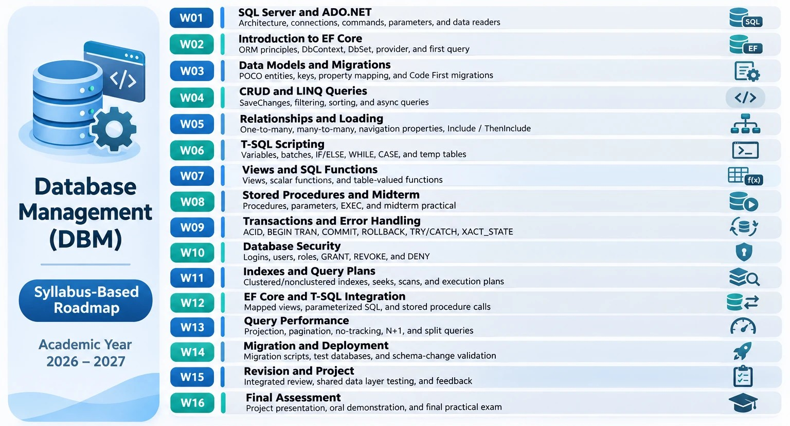

Design tables and manually query or change data using T-SQL in SSMS.
TVET INTERACTIVE CODELAB STUDIO · SESSION 01
Database Management (DB3)
From the SQL queries you already know to the data-access code behind real applications.
GTC · PDB2
2026–2027
120 minutes · Remote-first
WELCOME TO YOUR COURSE
20 MIN
What will Database Management teach you?
In your previous SQL course (DB2), you learned to work with relational tables and execute SQL
commands using SQL Server and SSMS. Database Management (DB3) builds on that
foundation in two complementary directions.
First, you will connect C# Console applications to SQL Server using ADO.NET,
then discover how Entity Framework Core (EF Core) simplifies data access
through C# objects and LINQ.
You will also develop more advanced SQL Server skills, including views, stored
procedures, user-defined functions, indexes, transactions, database security, execution
plans, and query-performance analysis.
Together, these skills will support your parallel ASP.NET Core Web Development
course and prepare you for future desktop application development.
Use Console applications with ADO.NET, then EF Core and other database-management skills.
Later desktop development and the parallel ASP.NET Core Web course use these data-access ideas in their own interfaces.
DB Mentor · Your roadmap
We begin with why application data access is needed. The labs in DB3 use C# Console applications—not WPF, Windows Forms or ASP.NET interfaces.
Course goals from the training plan
Not all taught today01 · Access data
Explain SQL Server, ADO.NET, ORM and EF Core roles.
02 · Work with EF Core
Query, update and map data and schema changes.
03 · Program in T-SQL
Use scripts, views, functions and procedures.
04 · Manage safely
Transactions, security, query performance and deployments.
Our syllabus & 16-week roadmap
The syllabus is included in the site. View or download the PDF; explore the matching roadmap.
Official course plan · 3-page PDFOpen PDF ↗

At a glance: Week 1 ADO.NET; Weeks 2–5 EF Core fundamentals; Weeks 6–14 T-SQL, security and performance; Weeks 15–16 review and final assessment.
Our first three meetings: ADO.NET
3 × 120 minutes01 · TODAYMeet the data-access stack
Course introduction, technology choices and your first C# Console connection.
02 · NEXTQuery data safely
Parameterized SELECT, SqlCommand, SqlDataReader
and returned rows.
03 · THENApply and troubleshoot
Guided ADO.NET operations, safe parameters and exception handling.
Today’s eight lesson steps
120 minutes totalSTEP 02 · WHAT YOU ALREADY KNOW10 MIN
Recall DB2: SQL, SQL Server & SSMS
You have met these terms before. This quick recall makes their roles clear before we add C#.
SQL / T-SQL
Commands such as SELECT, INSERT, UPDATE, and
DELETE that express data operations.
SQL Server
The DBMS that stores databases, processes queries, checks permissions and returns results.
SSMS
A tool you open to connect to SQL Server, edit/run SQL and inspect or administer a database.
RECALL CHALLENGE
Where does the work actually happen?
WHAT YOU TYPE IN SSMS
SELECT StudentId, FullName
FROM dbo.Students;WHAT SQL SERVER RETURNS
| StudentId | FullName |
|---|---|
| 1 | Lina |
| 2 | Omar |
Illustrative result; no query runs in the webpage.
Which component executes the query and returns the rows?
DB2 takeaway: SSMS is how a person interacts with SQL Server.
In DB3, we need a C# program to do that work without a person manually opening SSMS.
STEP 03 · THE PROBLEM WE NEED TO
SOLVE10 MIN
How can C# get the same student record?
In DB2, you typed a query into SSMS. Imagine a future desktop or web application needs to show the same data after a user enters a Student ID. The application must communicate with SQL Server through code.
PREDICT → REVEAL
Two paths to one database engine
Developer→SSMS→SQL
Server
C# Console app→?→SQL Server
Think: which .NET API can open a connection and send a command?
Input
The Console app receives a request: “find student 1.” Later, a desktop or web interface can provide that request.
Output
SQL Server returns values. The C# app reads them and prints an answer such as “Student: Lina.”
Important boundary: Today we write Console apps
only. The database-access skills will transfer to other courses, but we are not building
a desktop GUI, web page, API or EF Core app in this session.
STEP 04 · DIFFERENT TOOLS, DIFFERENT
JOBS15 MIN
SSMS vs ADO.NET vs EF Core
All three can be part of the same development workflow. They are not three databases and not interchangeable tools.
SSMS
Graphical SQL Server client for writing queries, browsing tables and administration.
Used by: developers and administrators.
ADO.NET
APIs used in C# code to open connections, execute SQL commands and process results.
Used by: application code via providers such as
Microsoft.Data.SqlClient.
EF Core
Maps C# classes to relational data, supports LINQ queries and tracks changes.
Used by: application code; relies on a database provider for SQL Server access.
Choose the right technology
Read the scenario, then choose the most suitable tool.
Keep SQL Server separate: SQL Server is the DBMS that executes
the SQL. SSMS is a client; ADO.NET is a .NET access technology; EF Core is an ORM. Neither EF
Core nor SSMS replaces the database engine.
STEP 05 · WHY TWO C# APPROACHES?15 MIN
Why learn ADO.NET before EF Core?
ADO.NET makes the individual pieces visible. You write the SQL, open the connection, execute a command and read the returned values. In larger systems, repeating these steps and manually translating rows to objects adds work.
C# Console→ADO.NET / SqlClient→SQL Server
With ADO.NET, the code directly manages the connection, SQL command and reader.
WHAT ADO.NET TEACHES
Understand the mechanism
Connection objects, explicit SQL, parameters, reading data, resource cleanup and error handling. Excellent for learning what actually happens when C# talks to SQL Server.
WHY EF CORE IS USEFUL
Reduce repeated data-access code
Uses C# entity classes, LINQ, change tracking and migrations. It can reduce manual SQL and row-to-object mapping for common operations.
Compare the idea, not the syntax yet
These are conceptual previews for later sessions—not code you must memorize or execute today.
ADO.NET (EXPLICIT)
Open connection
Create SQL command
Execute command
Read returned values
Dispose resourcesEF CORE (ABSTRACTION)
Define entity model
Configure DbContext
Write LINQ query
EF Core generates SQL
Read mapped objectsImportant: EF Core does not replace SQL Server. For
SQL Server it uses its provider, which builds on ADO.NET. EF Core saves effort in many cases but
still requires understanding SQL, generated queries and performance. We learn and practise
ADO.NET first; EF Core follows in the syllabus.
STEP 06 · YOUR FIRST ADO.NET MENTAL
MODEL15 MIN
ADO.NET: connection → command → result
Today we use the simplest possible read-only example: count the rows in
dbo.Students. We will not build menus, forms, or CRUD screens.
Explore the steps
Select each stage to see what it is responsible for. Follow the stages in order.
1 · SqlConnection
Represents the chosen SQL Server connection: server, database and authentication information.
What goes in?
A connection string tells the provider where to connect. The SQL text tells SQL Server what to calculate.
SELECT COUNT(*)
FROM dbo.Students;What comes back?
One number: how many rows the Students table contains. ExecuteScalarAsync()
retrieves a single value from the first row and first column.
3 rows in the starter data
Coming next: In Session 02, a parameterized
SELECT ... WHERE StudentId = @id and SqlDataReader let you retrieve
and display an actual student record. We are intentionally not introducing them all at once.
How C# communicates with SQL Server
Reveal the class names one at a time to explore the connected and disconnected parts of ADO.NET. Only the first two classes are used in today's Console lab.
0 / 8
C# Console ApplicationOur program calls ADO.NET classes in C#
ADO.NET · Provider + In-memory ComponentsMicrosoft.Data.SqlClient · System.Data
Connected accessUses a live connection while accessing results
Disconnected accessWork with data cached in memory
SQL Server Database TVET_DBM_Lab01 · dbo.Students
Ready to explore. Select “Reveal next class” to uncover the ADO.NET components.
Class vs. method: SqlCommand is a class; ExecuteScalarAsync() is one of its methods and returns a single result. Architecture note: SqlDataAdapter uses connections and commands to fill or update in-memory tables; DataTable and DataSet are not SQL Server provider classes.
STEP 07 · FIRST PRACTICAL · C# CONSOLE
ONLY30 MIN
Your first ADO.NET Console app
Build a C# Console application, open SQL Server, and display the number of student records. This is a real ADO.NET example, not an online database simulator.
What you need: .NET SDK (or Visual Studio with C#
tools), SQL Server or LocalDB, and SSMS for the database setup. If an instance is not available,
follow the code walkthrough with your instructor and run it when access becomes available.
LocalDB is Windows-only. No campus laboratory or GUI project is required.
5 MIN
A · Prepare the starter database
Before connecting C# to SQL Server, we need a database. Open SQL Server Management Studio (SSMS), connect to your SQL Server instance, and execute the supplied setup script.
The script will:
- Create
TVET_DBM_Lab01only if it does not already exist. - Create
dbo.Studentsonly if the table is missing. - Insert three sample students only if their IDs are not already present.
Why check before creating?
Running the setup script again should not recreate existing
database objects or duplicate the sample students.
Remember which SQL Server instance you connected to in SSMS. Your C# application must connect to that same instance.
10 MIN
B · Create the C# project and install SqlClient
We will develop our application using Visual Studio. It will be a C# Console Application: an application that communicates with users through text input and output.
Part 1 · Create the Console Application
- Launch Visual Studio.
- Click Create a new project.
- Search for Console App.
- Select the C# Console App template.
- Click Next.
-
Enter
DBMFirstConnectionas the project name. - Choose a project location and click Next.
- Select the .NET version specified by your instructor, then click Create.
The Console is simply the application's text-based interface.
Part 2 · Install Microsoft.Data.SqlClient using NuGet
ADO.NET needs a SQL Server data provider.
We will add Microsoft.Data.SqlClient
through Visual Studio's built-in
NuGet Package Manager.
- Locate your project in Solution Explorer.
- Right-click the DBMFirstConnection project (not the solution).
- Select Manage NuGet Packages.
- Open the Browse tab.
-
Search for
Microsoft.Data.SqlClient. - Select the official package published by Microsoft.
- Click Install and accept any required license prompts.
- Verify the package appears under Dependencies → Packages in Solution Explorer.
Why do we need this NuGet package?
NuGet is the package manager used by .NET projects to install and manage reusable libraries.
Microsoft.Data.SqlClient is Microsoft's SQL Server data provider for .NET.
It provides classes such as
SqlConnection to connect to SQL Server
and SqlCommand to execute SQL commands.
Checkpoint: You should now have a C# Console project with Microsoft.Data.SqlClient installed. No terminal commands are required.
13 MIN
C · Write your first ADO.NET connection
Open Program.cs in Visual Studio and
replace its contents with the code below.
This program will connect to SQL Server, count the
students in our database, and display the result
in the Console.
CONNECTION SETUP
BEFORE WRITING THE CODE
Retrieve Your SQL Server Connection Details
In SSMS, open the Connect window and check the Connection Properties tab. Copy your Server Name and note the Authentication Method. You will use these details in the next step to configure your C# connection string.
1
SSMS · Connection Details
.\SQLEXPRESS
Windows Authentication
Example only. Use your own SQL Server instance.
2
Visual Studio · Program.cs
string cs =
@"Server=.\SQLEXPRESS;Database=TVET_DBM_Lab01;Integrated
Security=True;Encrypt=True;TrustServerCertificate=True";
Use your SSMS server name in place of the example.
Authentication matters:
Integrated Security=True is used for
Windows Authentication. SQL Server Authentication
requires different credentials.
Never publish passwords in GitHub.
Open Program.cs in Visual Studio and replace
its contents with the code below. Update the connection
string using your SSMS details, then run the application
to count the students in TVET_DBM_Lab01.
Program.cs · C# Console App
using Microsoft.Data.SqlClient;
string cs = @"Server=(localdb)\MSSQLLocalDB;
Database=TVET_DBM_Lab01;
Integrated Security=True;Encrypt=True;
TrustServerCertificate=True";
await using var connection = new SqlConnection(cs);
await connection.OpenAsync();
Console.WriteLine("Connected to SQL Server.");
const string sql = "SELECT COUNT(*) FROM dbo.Students";
await using var command = new SqlCommand(sql, connection);
int total = Convert.ToInt32(
await command.ExecuteScalarAsync()
);
Console.WriteLine($"Total students: {total}");Why does each line exist? (Read before running)
using Microsoft.Data.SqlClient;
— imports the SQL Server provider namespace,
giving us access to classes such as
SqlConnection and SqlCommand.
string cs
— stores the connection string, which identifies
the SQL Server instance, database, and authentication
settings. The sample uses Windows authentication
and trusts the local development server's certificate.
Production environments require appropriate
certificate validation.
new SqlConnection(cs)
— creates a connection object using those settings.
It does not open the connection yet.
OpenAsync()
— attempts to establish the actual connection
to SQL Server asynchronously.
Console.WriteLine(...)
— displays information in the Console window.
const string sql
— stores a fixed SQL query that counts the rows
in dbo.Students.
new SqlCommand(sql, connection)
— associates the SQL statement with our
database connection.
ExecuteScalarAsync()
— executes the query and returns a single value:
the student count.
Convert.ToInt32(...)
— converts the returned value into a C# integer.
await using
— ensures that the connection and command objects
are disposed of correctly when their scope ends.
6 MIN
D · Run the application and explain the result
In Visual Studio, press Ctrl + F5 to run the Console Application without debugging. You can also select Debug → Start Without Debugging.
Before running, predict the number of students that the query will return.
Expected Console output
Connected to SQL Server.
Total students: 3
Total students: 3
If additional students already exist, the count may be higher than three. The setup script does not delete previously stored rows.
Connection failed? Check these first
SQL Server instance:
Does the Server value match the
instance you connected to in SSMS?
Database name:
Does TVET_DBM_Lab01 exist
on that instance?
Server availability: Is your SQL Server or LocalDB instance running?
Permissions: Does your Windows account have permission to access the database?
Security: Never publish real database passwords in a public GitHub repository.
Think about it:
Which line opens the connection?
Which line sends the SQL query?
Which line displays the returned result?
Explain the role of each before moving on.
STEP 08 · REFLECT & PREVIEW5 MIN
What have you learned today?
You now know the purpose of DB3, the difference between database tools, and the first steps for a C# Console application to access SQL Server.
Five quick recall questions
Choose an answer and read the feedback. These checks are for practice.
0 of 5 questions answered correctly.
AFTER-SESSION PRACTICE · SINGLE FILE
Submit your first database connection
Use your Program.cs from today’s Console app. Include your name in a comment at
the top and a short comment that explains what ExecuteScalarAsync() returns.
Demonstrate the result orally if requested.
Submit exactly one file to Google Classroom named
StudentName_DB_Lab01.cs. No ZIP, SQL setup file, screenshots or extra
documents.
Suggested rubric · 10 marks: project/SqlClient setup 2 ·
correct SQL connection 3 · command and scalar result 3 · comments and clarity 2.
SESSION 01 · DONEConnection + scalar
Why the tools exist, first read-only Console query.
SESSION 02 · NEXTParameter + Reader
Find one student using @id and display multiple values.
SESSION 03 · THENOperations + errors
Strengthen the same Console app with safe data operations and handling.
DB Mentor · Looking ahead
We are not learning EF Core syntax yet. First understand SQL Server connections and commands with ADO.NET; then you can appreciate what an ORM simplifies and what it still depends on.
YOUR LEARNING JOURNEY · 2026–2027
Course syllabus & roadmap.
This course uses a 16-week plan. The first week contains three guided ADO.NET meetings; further weeks follow the uploaded plan. Read the embedded PDF and explore the matching roadmap.
Database ManagementTVET Level 2 · PDB216-week
overview
COURSE ROADMAP
16 WEEKS
The sixteen-week syllabus sequence
This revised roadmap follows the uploaded syllabus week by week. Expand the accessible outline for exact topic names.
Read the complete roadmap as accessible text
- 01
SQL Server and ADO.NET
- 02
Introduction to EF Core
- 03
Data Models and Migrations
- 04
CRUD and LINQ Queries
- 05
Relationships and Loading
- 06
T-SQL Scripting
- 07
Views and SQL Functions
- 08
Stored Procedures and Midterm
- 09
Transactions and Error Handling
- 10
Database Security
- 11
Indexes and Query Plans
- 12
EF Core and T-SQL Integration
- 13
Query Performance
- 14
Migration and Deployment
- 15
Revision and Project
- 16
Final Assessment
SYLLABUS DOCUMENT
PDF · 3 PAGES
Read the course syllabus PDF
The complete three-page plan is included in this website and can be viewed directly here, opened in another tab, or saved for offline study.
If the embedded PDF is not visible in your browser, use Open
PDF.
Difference flagged: The earlier graphic began
with two weeks of Database Fundamentals and later SQL Fundamentals, whereas the uploaded PDF
begins with SQL Server and ADO.NET in Week 1 and EF Core in Week 2. The earlier graphic also
assigned Weeks 15–16 to the final exam; the PDF specifies Week 15 Revision and Project, and Week
16 Final Assessment. This revised roadmap follows the uploaded PDF (which is labeled Proposed
Revision, October 2026).
Ready to start?
Return to the interactive Session 01 lesson. The syllabus view is not counted in your eight-step progress.
Session 01 complete!
You have completed the eight steps of Session 01. Review your one-file Console assignment and prepare for the next ADO.NET lab.